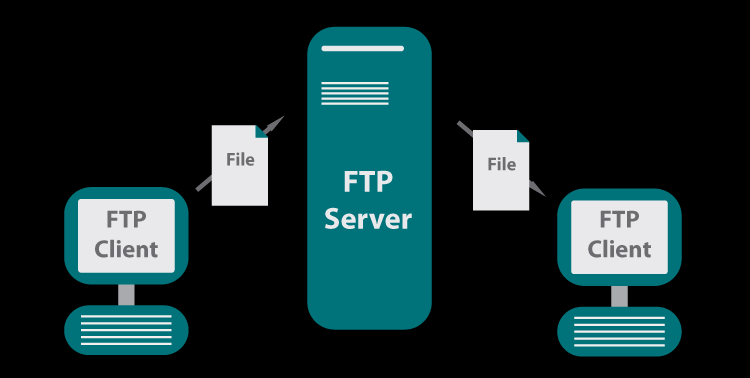

Un cliente FTP es un programa que se instala en el ordenador del usuario, y que emplea
el protocolo FTP para conectarse a un servidor FTP y transferir archivos, ya sea para
descargarlos o para subirlos. Un cliente FTP emplea el protocolo FTP para conectarse a
un servidor FTP para transferir archivos. Cuando un navegador no está equipado con la
función FTP, o si se quiere cargar archivos en un ordenador remoto, se necesitará utilizar
un programa cliente FTP.
